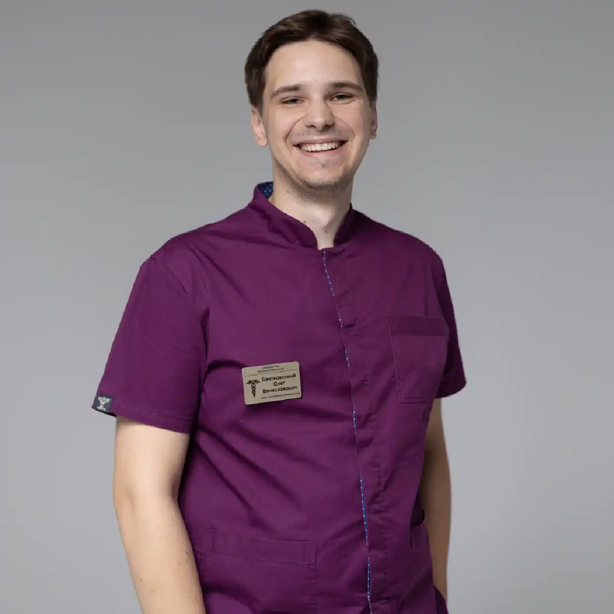

+38(068) 79 72 782
+38(068) 79 72 782Крапельниця від алкоголю Харків
Допомога при похмілля цілодобово!


Безкоштовна консультація, працюємо цілодобово 24/7
Допомога при похмілля цілодобово!
Крапельниця від алкоголю в Харкові — це медична детоксикація, яка допомагає швидко та безпечно зняти симптоми алкогольної інтоксикації, полегшити похмілля, стабілізувати тиск і пульс, зменшити нудоту, тремор, тривожність і відновити водно-електролітний баланс. Крапельниця від алкоголю особливо актуальна після запою, при тяжкому похміллі, слабкості, зневодненні та порушеннях сну, коли організму потрібна підтримка печінки, серця та нервової системи. Головна перевага крапельниці — контрольованість і прогнозованість ефекту: лікар оцінює стан, підбирає склад препаратів індивідуально та спостерігає за реакцією організму в процесі.
На відміну від «домашніх» методів, коли людина намагається впоратися таблетками, міцною кавою, душем або повторним вживанням алкоголю, крапельниця від алкоголю впливає на ключові механізми погіршення самопочуття. Після вживання спиртного організм втрачає рідину, порушується баланс електролітів, зростає навантаження на серце й судини, страждає печінка, а нервова система реагує тривожністю, дратівливістю та безсонням. Саме тому похмілля — це не просто «поганий стан», а комплекс порушень, які можуть посилюватися при супутніх захворюваннях, перевтомі, нестачі сну та тривалому стажі вживання.
Важливою перевагою крапельниці від алкоголю є те, що препарати надходять безпосередньо в кровотік і починають діяти швидше, ніж засоби, прийняті всередину. Це особливо актуально при нудоті та блюванні, коли таблетки не засвоюються або викликають додаткове подразнення шлунка. Крапельниця від алкоголю допомагає м’яко поповнити дефіцит рідини, покращити самопочуття та зменшити вираженість симптомів інтоксикації без різких «гойдалок» і перевантаження організму. За правильно підібраної схеми зменшується головний біль, минає сухість у роті, знижується тремор, стає легше дихати, стабілізується загальний стан, повертається ясність мислення та здатність нормально відпочивати.
Процедура завжди починається з оцінки стану. Лікар уточнює тривалість вживання, наявність запою, хронічні захворювання, алергії, препарати, які пацієнт приймає постійно, і вимірює життєво важливі показники — тиск, пульс, сатурацію, температуру. Це необхідно, щоб відрізнити звичайну інтоксикацію від станів, які можуть потребувати іншого підходу або навіть госпіталізації. Наприклад, небезпечними можуть бути виражена аритмія, вкрай високий тиск, повторне блювання без можливості пити воду, біль у грудях, ознаки сильного зневоднення, сплутаність свідомості або симптоми, схожі на початок алкогольного психозу.
Окремо варто підкреслити: крапельниця від алкоголю — це важливий етап допомоги, але не «чарівне рішення», якщо запої повторюються. Якщо у людини формується залежність, детоксикація знімає гостру інтоксикацію та дає можливість прийти до тями, але для стійкого результату потрібен план подальших кроків: консультація лікаря, підтримувальна терапія, психологічна допомога, робота з тригерами, а іноді й кодування за показаннями. Правильна тактика — використовувати крапельницю від алкоголю як безпечний старт відновлення, а потім закріпити результат, щоб знизити ризик повторних зривів.
Процедура показана в тих випадках, коли симптоми алкогольної інтоксикації виражені настільки, що стандартні домашні заходи не приносять полегшення або можуть становити реальну небезпеку для здоров’я. Крапельниця від алкоголю необхідна після тривалого вживання спиртних напоїв і запійних станів, а також при багаторазовому блюванні, інтенсивному головному болю, вираженому зневодненні, сухості в роті, треморі рук і всього тіла, загальній слабкості, порушенні координації рухів, різких коливаннях артеріального тиску та прискореному серцебитті. Нерідко пацієнти відзначають відчуття «розбитості», сильну втомлюваність, неможливість зосередитися та виконувати навіть прості побутові дії, що свідчить про глибоку інтоксикацію організму.
У багатьох ситуаціях приводом для звернення по медичну допомогу стають виражена тривожність, панічні відчуття, почуття внутрішньої напруги, стійке безсоння або поверхневий, переривчастий сон. Часто присутній так званий «внутрішній тремор», відсутність апетиту, відраза до їжі та води, що посилює зневоднення та дефіцит електролітів. Додатковим показанням до проведення крапельниці є стан, за якого людина фізично не здатна самостійно дістатися до медичного закладу через слабкість, запаморочення, нудоту або страх погіршення самопочуття в дорозі. У таких випадках домашня детоксикація під контролем лікаря стає найбільш безпечним і раціональним рішенням.
Особливо важливо не відкладати проведення крапельниці від алкоголю, якщо у пацієнта є супутні захворювання або додаткові фактори ризику. При гіпертонії, патологіях серцево-судинної системи, захворюваннях печінки та підшлункової залози, цукровому діабеті, порушеннях обміну речовин, а також за наявності раніше перенесених ускладнень на тлі вживання алкоголю інтоксикація, як правило, перебігає значно важче й агресивніше. Алкоголь у таких ситуаціях посилює навантаження на внутрішні органи, провокує нестабільність тиску, аритмії, погіршення функції печінки та обмінних процесів.
У пацієнтів із групи ризику симптоми можуть наростати швидше, а компенсаторні можливості організму виявляються обмеженими. Це суттєво підвищує ймовірність розвитку небезпечних станів — від виражених вегетативних реакцій і загострення хронічних захворювань до серйозних ускладнень з боку серця та нервової системи. Саме тому своєчасна медична допомога у вигляді крапельниці від алкоголю стає ключовою умовою безпечної стабілізації стану, зниження навантаження на життєво важливі органи та більш м’якого, контрольованого відновлення організму.
Ефективність крапельниці від алкоголю зумовлена тим, що лікарські препарати надходять безпосередньо в кровотік, минаючи шлунково-кишковий тракт. Це особливо важливо при нудоті, блюванні та порушенні процесів всмоктування, коли прийом таблетованих форм або не дає очікуваного ефекту, або може додатково подразнювати слизову шлунка та погіршувати загальне самопочуття. При внутрішньовенному введенні активні речовини починають діяти практично одразу, що дозволяє швидше купірувати симптоми інтоксикації та стабілізувати стан пацієнта.
Крапельниця від алкоголю допомагає за короткий час поповнити дефіцит рідини та електролітів, який неминуче формується після вживання спиртного через зневоднення. Відновлення водно-електролітного балансу сприяє нормалізації артеріального тиску, зниженню головного болю, зменшенню слабкості та запаморочення. Одночасно знижується токсичне навантаження на внутрішні органи, насамперед на печінку, серце та нервову систему, які в період алкогольної інтоксикації працюють із перевантаженням. Підтримка обмінних процесів дозволяє організму швидше справлятися з наслідками розпаду етанолу та його токсичних метаболітів, прискорюючи загальне відновлення.
Не менш значущим чинником ефективності є постійний медичний контроль під час проведення крапельниці від алкоголю. Лікар оцінює ступінь інтоксикації, контролює артеріальний тиск, пульс, частоту дихання та рівень сатурації, відстежуючи реакцію організму на введені препарати. Обов’язково враховуються хронічні захворювання, вік пацієнта, раніше перенесені ускладнення та можливі протипоказання, що особливо важливо за наявності серцево-судинних, ендокринних або печінкових патологій. На підставі комплексної оцінки стану підбирається індивідуальна комбінація препаратів і оптимальна швидкість їх введення. Такий персоналізований підхід дозволяє не лише ефективно зняти гострі симптоми алкогольної інтоксикації, а й уникнути перевантаження організму, різких коливань тиску або небажаних побічних реакцій. У результаті крапельниця діє м’яко, послідовно й водночас результативно, знижуючи ризик ускладнень, раптових погіршень стану та роблячи процес детоксикації максимально безпечним і контрольованим.
Склад крапельниці від алкоголю формується індивідуально лікарем і залежить від ступеня алкогольної інтоксикації, тривалості вживання, загального стану пацієнта та наявності супутніх захворювань. Мета такої терапії — не просто тимчасово полегшити самопочуття, а безпечно вивести токсини, стабілізувати роботу внутрішніх органів і запобігти розвитку ускладнень. Нижче наведені основні групи препаратів, які застосовуються при знятті алкогольної інтоксикації.
Важливо підкреслити, що всі препарати, їх поєднання та швидкість введення підбираються виключно лікарем. Самостійне використання медикаментів або спроби «зібрати крапельницю» без медичного контролю можуть бути небезпечними для здоров’я. Правильно підібрана крапельниця від алкоголю дозволяє безпечно зняти інтоксикацію, стабілізувати стан пацієнта та створити основу для подальшого відновлення організму.
Вартість крапельниці від алкоголю в Харкові починається від 2199 грн.
Крапельниця запускає комплексне відновлення організму, впливаючи одразу на кілька ключових ланок алкогольної інтоксикації. Насамперед вона поповнює дефіцит рідини, допомагає нормалізувати рівень електролітів і покращує мікроциркуляцію, завдяки чому тканини й органи починають отримувати достатню кількість кисню та поживних речовин. Це особливо важливо для органів, які найбільше страждають після вживання алкоголю, — печінки, серця та нервової системи. Їх підтримка дозволяє знизити токсичне навантаження та запобігти розвитку ускладнень.
За рахунок регідратації зменшується головний біль, минає виражена слабкість і відчуття «розбитості», знижується сухість у роті та відновлюється нормальна терморегуляція організму. Поліпшення водно-електролітного балансу сприяє стабілізації артеріального тиску та серцевого ритму, що позитивно позначається на загальному самопочутті та переносимості відновного періоду. Пацієнти часто відзначають, що стає легше дихати, зменшується відчуття тяжкості в тілі та з’являється більше фізичних сил.
Стабілізація обмінних процесів допомагає організму швидше переробляти й виводити продукти розпаду етанолу, які й є основною причиною погіршення стану. Одночасно підтримка нервової системи знижує дратівливість, тривожність, внутрішнє напруження та тремор, сприяє покращенню емоційного фону й зменшенню панічних відчуттів. Нормалізація роботи центральної нервової системи також допомагає відновити сон, який часто порушується після вживання алкоголю або в період виходу із запою. За грамотно підібраного складу крапельниці та правильної швидкості введення терапія переноситься спокійно та комфортно. Процедура не викликає різких перепадів тиску або самопочуття, а ефект розвивається послідовно й передбачувано. Саме такий медичний підхід дозволяє не просто тимчасово полегшити стан, а забезпечити м’яке, контрольоване відновлення організму після алкогольної інтоксикації та створити умови для подальшого повноцінного одужання.
Відчутне покращення стану після крапельниці від алкоголю у багатьох пацієнтів починається вже через 15–20 хвилин після початку інфузії. Саме в цей період зменшується вираженість нудоти, слабшає відчуття тяжкості в шлунку, стає легше голові та знижується інтенсивність внутрішнього тремору й тремтіння. У міру продовження процедури з’являється відчуття «ясності» та зібраності, зменшується загальна слабкість, стабілізуються артеріальний тиск і пульс, що дозволяє людині відчути себе більш упевнено й спокійно. У перші години після початку крапельниці ефект наростає поступово й послідовно. Поліпшується загальне самопочуття, знижується вираженість інтоксикації, зменшуються вегетативні прояви, такі як пітливість, озноб і серцебиття. За рахунок відновлення водно-електролітного балансу та підтримки обмінних процесів організм починає швидше справлятися з наслідками алкогольного навантаження.
При більш тяжкому стані відновлення організму може відбуватися поетапно. На першому етапі усувається гостра алкогольна інтоксикація та зневоднення, знижується токсичне навантаження на внутрішні органи й нервову систему. У міру стабілізації стану починає відновлюватися сон, зменшується тривожність, зникає відчуття внутрішнього напруження та дратівливості. У багатьох пацієнтів покращується апетит і з’являється можливість нормально приймати їжу та рідину, що додатково прискорює відновні процеси.
Важливим орієнтиром ефективності терапії є не лише суб’єктивні відчуття пацієнта, а й об’єктивні показники, які контролює лікар у ході та після процедури. До них належать артеріальний тиск, частота пульсу, загальний стан, рівень гідратації та реакція організму на введені препарати. Саме поєднання раннього клінічного покращення та стабілізації життєво важливих показників дозволяє говорити про безпечний і повноцінний вихід зі стану алкогольної інтоксикації. Якщо запій був тривалим, симптоми виражені значно або у пацієнта є хронічні захворювання серцево-судинної системи, печінки чи ендокринні порушення, може знадобитися повторна крапельниця або розширена схема підтримки. У таких випадках лікар вибудовує поетапний план детоксикації та відновлення, спрямований на зниження ризику ускладнень, закріплення результату та досягнення стійкого покращення самопочуття.
Крапельниця від алкоголю вдома в Харкові — це зручний і безпечний формат медичної допомоги у ситуаціях, коли пацієнтові важко самостійно дістатися до клініки або принципово важливо зберегти конфіденційність. Виїзд нарколога додому особливо актуальний при вираженій інтоксикації, сильній слабкості, запамороченні, нудоті та загальному нестабільному стані, коли будь-яка дорога й очікування в черзі можуть лише посилити стрес і погіршити самопочуття.
Після приїзду лікар-нарколог проводить первинний огляд пацієнта на місці. Спеціаліст оцінює ступінь алкогольної інтоксикації, загальний стан організму, вимірює артеріальний тиск, пульс, рівень сатурації та, за потреби, температуру тіла. Обов’язково уточнюються хронічні захворювання, перенесені раніше ускладнення, алергічні реакції та препарати, які пацієнт приймає на постійній основі. Такий огляд дозволяє виключити небезпечні стани й підібрати оптимальну схему детоксикації саме для цієї людини. На підставі отриманих даних лікар індивідуально формує склад крапельниці від алкоголю, розраховує об’єм інфузії, дозування препаратів і швидкість їх введення. Протягом усієї процедури здійснюється медичний контроль: спеціаліст спостерігає за реакцією організму, стежить за самопочуттям пацієнта та показниками тиску й пульсу, за потреби коригує терапію. Це робить процедуру не лише ефективною, а й максимально безпечною навіть при тяжкому стані.
Крапельниця від алкоголю вдома особливо корисна при вираженій слабкості, багаторазовому блюванні, треморі рук і всього тіла, підвищеній тривожності, панічних відчуттях і безсонні. У звичній і спокійній обстановці пацієнт почувається більш захищено, легше розслабляється, що позитивно впливає на роботу нервової системи й прискорює відновлення. Відсутність необхідності виходити з дому знижує фізичне та емоційне навантаження, дозволяючи організму зосередитися на відновних процесах. Терміновий виклик нарколога додому дає змогу розпочати детоксикацію своєчасно, ще до розвитку ускладнень, які нерідко виникають після запою або тяжкого похмілля. Рання медична допомога знижує ризик різких стрибків тиску, порушень серцевого ритму, посилення тривожності та інших небезпечних наслідків алкогольної інтоксикації. Крапельниця від алкоголю вдома в Харкові — це можливість отримати професійну наркологічну допомогу швидко, конфіденційно та в найбільш комфортних для пацієнта умовах.
Крапельниця від запою — це внутрішньовенна детоксикація та медикаментозна підтримка організму в період абстиненції після тривалого й безперервного вживання алкоголю. Під час запою організм перебуває у стані хронічної інтоксикації, за якої етанол і продукти його розпаду стають частиною обмінних процесів. Різке припинення вживання алкоголю без медичного супроводу в такій ситуації може призвести до серйозних збоїв у роботі нервової системи, серця й судин, тому крапельниця розглядається як найбезпечніший і контрольований спосіб виходу із запійного стану.
Основне завдання крапельниці від запою — м’яко й безпечно вивести людину з цього стану, стабілізувати роботу серцево-судинної та нервової системи, відновити водно-електролітний баланс і знизити токсичне навантаження на внутрішні органи. Під час процедури зменшуються симптоми відміни, такі як тремор рук і тіла, тахікардія, різкі стрибки артеріального тиску, виражена тривожність, внутрішнє напруження, безсоння, нудота та загальна фізична слабкість. Завдяки поступовому й контрольованому впливу організм адаптується до відсутності алкоголю без різких погіршень самопочуття.
Крапельниця від запою також спрямована на профілактику небезпечних ускладнень, які можуть розвиватися в період абстиненції, особливо при тривалих запоях. Підтримка обмінних процесів і регідратація допомагають поліпшити кровообіг, знизити навантаження на серце й мозок, зменшити ризик порушень серцевого ритму та виражених вегетативних реакцій. Додаткова підтримка нервової системи сприяє зниженню дратівливості, панічних відчуттів і психоемоційної нестабільності, що особливо важливо в перші доби виходу із запою.
Крапельниця від запою — це не «лікування залежності за один день» і не заміна комплексної терапії алкоголізму. Це медичний етап допомоги, який дозволяє безпечно пережити гострий період, стабілізувати стан і створити фізіологічну основу для подальшого відновлення організму. Після виходу із запою лікар, як правило, надає рекомендації щодо режиму, харчування, відновлення сну та, за потреби, обговорює подальші кроки для профілактики повторних запоїв.
Крапельниця від похмілля — це внутрішньовенна терапія, спрямована на швидке й ефективне полегшення симптомів алкогольної інтоксикації після вживання спиртних напоїв. На відміну від запою, похмілля частіше виникає після відносно короткочасного прийому алкоголю, однак стан може бути вираженим і тяжким через зневоднення, порушення водно-електролітного балансу, токсичне навантаження на печінку та нервову систему, а також проблеми зі сном і підвищену тривожність.
Основна мета крапельниці від похмілля — відновити баланс рідини та електролітів, знизити інтоксикацію й допомогти організму швидше впоратися з наслідками розпаду етанолу. Після процедури зменшується головний біль, минає нудота, знижується слабкість і відчуття «розбитості», з’являється ясність свідомості та повертається працездатність. Внутрішньовенне введення препаратів дозволяє досягти більш швидкого й передбачуваного ефекту порівняно з таблетками, які часто погано засвоюються при нудоті та подразненні шлунка. Крапельниця від похмілля також допомагає стабілізувати нервову систему, зменшити дратівливість і внутрішнє напруження, поліпшити загальне самопочуття та якість сну. Це особливо важливо для людей, яким необхідно швидко відновитися й повернутися до звичного ритму життя та роботи. При цьому лікар завжди оцінює загальний стан пацієнта та виключає більш серйозні причини погіршення самопочуття.
Окрема увага приділяється діагностиці: спеціаліст визначає, чи справді йдеться про похмілля, а не про початок більш тяжкого стану. За симптомами похмілля можуть приховуватися ускладнення з боку артеріального тиску, серця, підшлункової залози або печінки, особливо у людей із хронічними захворюваннями. У таких випадках крапельниця підбирається з урахуванням підвищених ризиків або пацієнтові може бути рекомендоване додаткове обстеження. Таким чином, крапельниця від похмілля — це не просто спосіб «швидко прийти до тями», а медична допомога, спрямована на безпечне відновлення організму, зниження навантаження на внутрішні органи та запобігання можливим ускладненням після вживання алкоголю.
Прокапування від алкоголю вважається одним із найефективніших методів при тяжкому похміллі, оскільки воно діє значно швидше й надійніше порівняно з домашніми способами відновлення. Після вживання алкоголю робота шлунково-кишкового тракту часто порушується, тому таблетовані препарати можуть погано засвоюватися, подразнювати слизову шлунка та давати непередбачуваний ефект, особливо при вираженій нудоті й повторному блюванні. У таких умовах внутрішньовенне введення лікарських засобів стає оптимальним рішенням.
Крапельниця дозволяє контрольовано заповнити дефіцит рідини, нормалізувати водно-електролітний баланс і підтримати обмінні процеси в організмі. Завдяки прямому надходженню препаратів у кровотік ефект розвивається швидше й більш стабільно, що допомагає м’яко знизити симптоми інтоксикації — головний біль, слабкість, тремор, внутрішнє напруження та нудоту. Одночасно зменшується навантаження на печінку, серце й нервову систему, які особливо страждають після алкогольної інтоксикації.
Прокапування від алкоголю — це не просто «вітаміни для поліпшення самопочуття», а повноцінна медична допомога, яка проводиться з обов’язковою оцінкою стану та можливих ризиків. Перед початком процедури лікар аналізує самопочуття пацієнта, вимірює тиск і пульс, уточнює наявність хронічних захворювань і протипоказань. На підставі цієї інформації спеціаліст визначає, які компоненти дійсно необхідні, а які препарати можуть бути небажаними або навіть небезпечними при конкретних захворюваннях. Такий індивідуальний і контрольований підхід дозволяє не лише швидко прийти до тями після тяжкого похмілля, а й значно знизити ймовірність ускладнень, які інколи розвиваються на тлі вираженої алкогольної інтоксикації. У результаті організм отримує м’яку, але ефективну підтримку, а відновлення проходить більш безпечно й передбачувано.
Наркологічна допомога в Харкові при алкогольній інтоксикації має бути безпечною, індивідуальною та конфіденційною, оскільки йдеться про стан, який безпосередньо впливає на роботу життєво важливих органів і загальне самопочуття людини. Крапельниця від алкоголю від наркологічної служби UmbrellaPlus проводиться під постійним контролем лікаря-нарколога з обов’язковим урахуванням артеріального тиску, пульсу, рівня сатурації, вираженості інтоксикації, загального стану пацієнта та наявності супутніх діагнозів. Такий медичний підхід дозволяє мінімізувати ризики й підібрати оптимальну схему детоксикації саме для конкретного випадку, а не діяти за шаблоном.
Під час процедури лікар спостерігає за реакцією організму на введення препаратів і за потреби коригує терапію, що особливо важливо при нестабільному тиску, порушеннях серцевого ритму, вираженій тривожності або наявності хронічних захворювань. Після стабілізації стану пацієнт отримує докладні рекомендації щодо подальшого відновлення: режиму сну й неспання, питного режиму, харчування, фізичного навантаження та обмежень на найближчі дні. Ці рекомендації допомагають закріпити ефект крапельниці та знизити ймовірність повторного погіршення самопочуття.
Якщо епізоди запою або тяжкого похмілля повторюються, однієї детоксикації, як правило, недостатньо. У таких ситуаціях важливо не обмежуватися зняттям гострої інтоксикації, а обговорити подальший план допомоги. Він може включати консультацію спеціаліста, підтримувальну медикаментозну терапію, роботу з психологічними причинами вживання та сучасні методи лікування залежності, спрямовані на зниження потягу до алкоголю й профілактику рецидивів. Комплексний підхід дозволяє впливати не лише на наслідки, а й на причини проблеми. Правильно організована наркологічна допомога в Харкові дає можливість не тільки полегшити стан «тут і зараз», швидко й безпечно зняти симптоми інтоксикації, а й зробити важливий крок до більш стійкого відновлення. Своєчасне звернення до лікаря, індивідуальний підбір терапії та подальший супровід допомагають зберегти здоров’я, знизити ризик ускладнень і поступово повернутися до стабільного та якісного способу життя.
Телефон для консультації та виклику нарколога додому: +38(050-021-69-57)
Так, ми суворо дотримуємося повної конфіденційності на всіх етапах лікування. Інформація про пацієнта, діагноз та проходження терапії не передається третім особам. Звернення до нас не тягне за собою постановку на облік. Ви можете бути впевнені у безпеці та анонімності.
Програма лікування розробляється індивідуально після консультації з фахівцем. Враховуються вид залежності, її тривалість, фізичний та психологічний стан пацієнта. Такий підхід дозволяє підвищити ефективність терапії та знизити ризик зриву. Ми не використовуємо шаблонні рішення.
Так, ми супроводжуємо пацієнтів і після основного курсу лікування. Проводяться консультації, рекомендації щодо адаптації та профілактики рецидивів. За потреби можлива подальша психологічна підтримка. Це допомагає зберегти результат та повернутися до повноцінного життя.
Анонимно

Ну в хлопців просто золоті руки й світла голова, мене капали Олексій та Владислав, буквально за декілька сеансів я наче заново народився, до цього пив більше 3х тижнів, не міг зупинитись, дуже радий що знайшов саме цих спеціалістів, всім рекомендую
Анонимно
В течение нескольких лет я злоупотреблял алкоголь, что привело к увольнению с работы и вызвало у меня мысли о суициде. Понимая, что такой образ жизни неприемлем, я обратился за помощью в клинику “Амбрела”. Здесь я смог преодолеть свою зависимость от спиртного благодаря заботливым и опытным врачам, а также эффективной системе лечения. Спустя более года я полностью избавился от желания употреблять алкоголь, и теперь моя жизнь вернулась в норму. Я даже не приближаюсь к спиртному! Благодарю врачей клиники “Амбрела” за их помощь и заботу.
Анонимно
Я обращался за помощью в различные клиники, пытаясь избавиться от своей зависимости от алкоголя, но без особых успехов. Никак не мог справиться с желанием прибегнуть к бутылке, пока друг не посоветовал мне обратиться в центр “Амбрелла”. Я записался на прием и был поражен заботливым отношением к пациентам. Уже прошло два года, и теперь я смотрю на алкоголь с абсолютной равнодушием, активно занимаюсь спортом и улучшил отношения в семье. Благодаря центру “Амбрелла” моя жизнь была спасена от алкогольной зависимости!
Анонимно
Хочу выразить свою благодарность врачам из центра алкоголизма “Амбрела” за то, что они буквально спасли мою жизнь. В течение последнего года я сильно увлекался питьем, и все это привело к катастрофическим последствиям. Хотя я ходил на терапевтические сеансы, но безрезультатно. Тогда я нашел адрес клиники “Амбрела” в интернете, изучил отзывы и информацию о центре, и записался на прием. Там мне сразу предложили методику лечения, которая помогла не только справиться с физической ломкой, но и психической зависимостью от алкоголя. Не буду распространяться, скажу только одно - после пребывания в этой клинике я стал другим человеком, и навсегда забыл, что такое привкус алкоголя. Больше меня не тянет на это! Я искренне верю, что в центре “Амбрела” трудятся настоящие целители душ!
Анонимно
После сложного развода мой сын начал подавлять свою обиду и горе употреблением алкоголя. Он старался скрывать это от меня, но я, как мать, почувствовала, что что-то не так. В конечном итоге, ситуация стала критической. Моя знакомая посоветовала мне обратиться в клинику “Амбрела”. Я была приятно удивлена их работой! Они помогли сыну преодолеть очередной период злоупотребления алкоголем, и с тех пор прошел уже более года, и он совсем не пьет.
Анонимно
Благодаря вашей помощи, моя семья была спасена. Я с трудом уговорила мужа начать лечение, и последний каплей был пьяное ДТП. К счастью, в аварии никто не пострадал, но это был для него сигнал к действию. Он наконец согласился пройти курс лечения на дому, в стационар не хотел ложиться. Лечение было трудным, и были моменты, когда срыв был настолько близок, но благодаря вашему центру Амбрелла мы справились с этим.
Анонимно
Для меня эта клиника стала настоящим спасением! Долгое время я упорно отказывался от лечения, уверен был, что со мной все в порядке. Но к счастью, семья уговорила меня попробовать. И сегодня я чувствую себя невероятно счастливым, осознавая, что мне абсолютно не нужен алкоголь. Огромное спасибо за помощь и поддержку, которые я получил здесь! Я благодарен вам за новую возможность жить полноценной и счастливой жизнью!
Анонимно
Выражаю благодарность ребятам, которые оказали мне помощь и не отвернулись. Уже 10 месяцев я остаюсь чистой. Благодарю за то, что помогли найти новый путь в моей жизни.
Номер телефону:
+380 (68) 797 27 82
+380 (50) 021 69 57
Адресу наркологічного центра вашого міста уточнюйте за
телефоном
Працюємо: Київ, Одеса, Львів, Харків, Дніпро, Запоріжжя,
Черкасах, Чугуєві, Чорноморську, Кам'янському
Telegram: t.me/umbrellaplus
Графік работы: Цілодобово